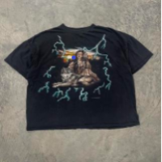
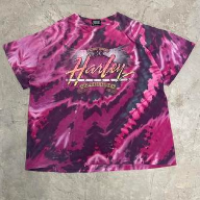
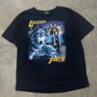
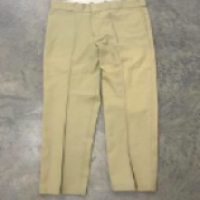
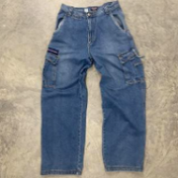
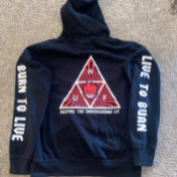
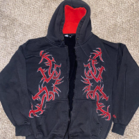
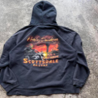

At ThatBoyThrift, customers can expect to find an extensive range of vintage treasures.
From iconic 1950s dresses exuding timeless elegance to bold and vibrant 1980s streetwear,
the inventory offers something for everyone.
Whether you're searching for a standout piece to complete your wardrobe or seeking
inspiration for a unique fashion statement, ThatBoyThrift has you covered.
Prepare to embark on a sartorial adventure like no other at ThatBoyThrift. With an
ever-changing inventory of vintage clothing that spans decades of fashion history,
this is a treasure trove waiting to be explored. You'll find a remarkable array of options
that cater to your individual style. ThatBoyThrift offers a captivating selection that will leave
you inspired and excited. Immerse yourself in the world of vintage fashion, where each piece
holds the power to transform your personal style and transport you to a bygone era.
Check out our store over at Depop as well:
|  |  |  |

|
 |  |
|  |  |  |